Personas, nacionales o extranjeras que residen habitualmente en el estado, o distrito correspondiente.
El momento de referencia del monto poblacional son las cero horas del 15 de marzo del 2015.
Se refiere a la población que tiene el distrito respecto a la población total de la entidad federativa, en viviendas particulares habitadas, expresadas por cada cien.
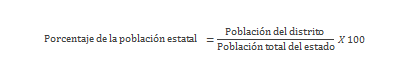Es el cociente del número de hombres entre el de mujeres en una población dada por cien. Se interpreta como el número de hombres por cada 100 mujeres.
Edad que, una vez ordenadas las edades, divide a una población en dos grupos numéricamente iguales; es decir, la edad en la cual la mitad de la población tiene una edad menor o igual, y la otra tiene una edad mayor o igual.
También conocida como razón de dependencia económica. Es el cociente de la suma de la población menor de 15 años y la población mayor de 64 años, entre la población en el grupo de edad de 15 a 64 años, por cada cien.
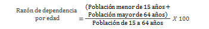Proporción de población hombres/mujeres, con respecto al total de la población.
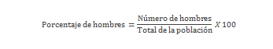 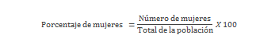Proporción de población por cada grupo de edad, con respecto al total de la población, expresada por cada cien.
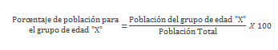Donde "X" se refiere a los siguientes grupos de edad
- 0 a 9 años
- 10 a 19 años
- 20 a 29 años
- 30 a 39 años
- 40 a 49 años
- 50 a 59 años
- 60 años y más
- No especificado
Personas, nacionales o extranjeras de 15 años y más que residen habitualmente en el estado, o distrito correspondiente.
Este indicador se presenta para el total de la población de 15 años y más, y su distribución por sexo.
Proporción de población de 15 años y más, con respecto al total de la población, expresada por cada cien.
Este indicador se presenta para el total de la población de 15 años y más, y su distribución por sexo.
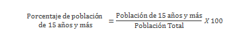 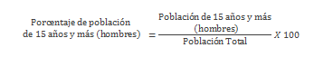 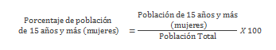Personas, nacionales o extranjeras de 18 años y más que residen habitualmente en el estado, o distrito correspondiente.
Este indicador se presenta para el total de la población de 18 años y más, y su distribución por sexo.
Proporción de población de 18 años y más, con respecto al total de la población, expresada por cada cien.
Este indicador se presenta para el total de la población de 18 años y más, y su distribución por sexo.
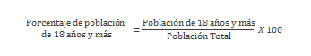 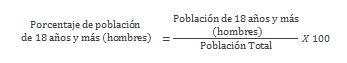 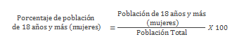Fuente:
Nota: